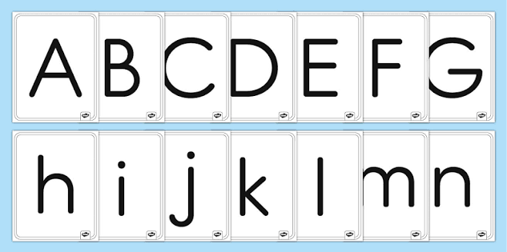

Назва курсу: Математика для початківців
Назви уроків: 1. Знайомство з цифрами; 2. Додавання; 3. Віднімання.
Тип завдань: Інтерактивні тести, візуальні задачки.
Назви уроків: 1. Знайомство з цифрами; 2. Додавання; 3. Віднімання.
Тип завдань: Інтерактивні тести, візуальні задачки.

Назви уроків: 1. Голосні звуки; 2. Приголосні звуки; 3. Читаємо по складах.
Тип завдань: Аудіодиктанти, з'єднання пар.

Назви уроків: 1. Тварини лісу; 2. Домашні улюбленці; 3. Космос.
Тип завдань: Розмальовки, вікторини.